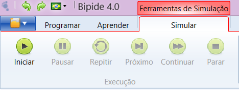
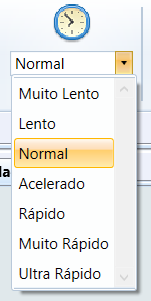
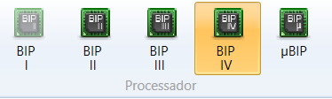

Possibilita a execução e simulação de programas Portugol sobre a arquitetura dos processadores BIP I, BIP II, BIP III e BIP IV.
Menu Simulação

Apresenta os controles para simulação dos programas:
- Simular - Inicia a simulação de um programa
- Pausar - Interrompe temporariamente a simulação do programa
- Repetir - Repete a última instrução
- Próximo - Simula a próxima instrução do programa
- Continuar - Continua a simulação do programa até o seu final
- Parar - Interrompe a simulação do programa
Velocidade

Permite controlar a velocidade com que ocorre a simulação do programa.
Processador

Permite selecionar o modelo do processador utilizado na simulação:
- BIP I - Exibe a processador BIP I
- BIP II - Exibe a processador BIP II
- BIP III - Exibe a processador BIP III
- BIP IV - Exibe a processador BIP IV